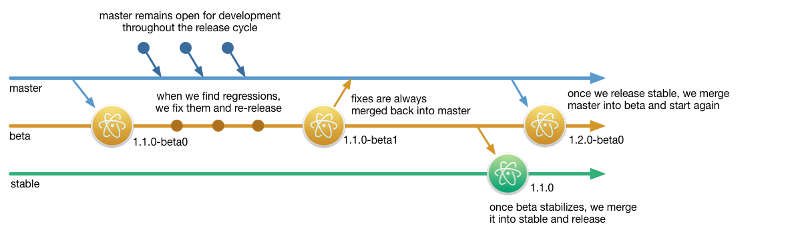

Introducing the Atom Beta Channel
October 21, 2015 nathansobo
Tweet

This week, we’re introducing a beta release channel for Atom and making some changes to our development workflow to improve productivity and the stability of releases. Instead of cutting releases directly from the master branch as we’ve done in the past, all changes will now spend time being tested in a beta phase, giving us more time to catch any regressions that slip through our automated test suite before releasing them to the world. If you like to live on the bleeding edge, using Atom Beta as your main editor is a great way to help us improve Atom. In exchange for encountering and reporting on occasional bugs, you’ll gain faster access to new features and performance improvements.
The Problem
Releasing straight from master worked pretty well for a while. It kept our mental model simple and minimized the time for getting improvements into the hands of users. Unfortunately, when regressions found their way into master, releasing directly off our development branch caused major disruptions in our workflow.
Often, a day or more would pass between a release and the discovery of some corner-case regression by a user. In the meantime, we might have merged another large pull request into master, leaving ourselves in a situation where in order to ship a fix the original regression, we needed to also ship a bunch of new code that had been on master for a very short amount of time, presenting the risk of yet more regressions.
In response to this kind of scenario, we started being much more cautious about merging code into master following a release, and when releasing large changes, this delay could easily extend for several days. This introduced coordination overhead, because now in order to merge a pull request, it wasn’t enough to know the code was ready. It was also important to know whether or not we had released recently and how likely that release was to contain a regression. These delays also introduced integration risk by delaying the opportunity to test multiple pull requests in combination with one another.
Finally, in the old system, new code only spent a very short amount of time in front of a very small and homogenous audience before being released to the world. We needed a way to test changes with a bigger, more diverse set of users, but still a group that had self-selected and was willing to experience a bit of instability.
The Solution
If you’ve read about how the Chrome and Rust teams handle their releases, our new strategy should sound familiar. We’re introducing two new branches, beta, corresponding to the new Atom Beta release channel, and stable, from which all general Atom releases will be built.

At a regular cadence, we’ll merge the latest changes from master into beta and cut a new release on the beta channel with a pre-release version number. For example, our first beta release was 1.1.0-beta0. New development will continue on master, but if we get reports of any regressions on the beta channel, we can fix them directly on beta and cut a new release with an incremented version number, such as 1.1.0-beta1, 1.1.0-beta2, etc.
When we feel beta has stabilized, we’ll merge the contents of the beta branch into stable and cut a new stable release with a version derived by removing the betaN pre-release suffix. Then we will again merge new changes from master into beta, repeating the cycle. We plan to bump the minor version on every stable release, and if we need to fix regressions that survive through the beta phase, we’ll bump the patch number and re-release on stable to fix them.
The key idea is that as code makes its way through this pipeline, it becomes increasingly stable, because riskier changes on master don’t affect beta and stable. These branches only get bug fixes, which means that users on the stable channel experience fewer bugs.
A Note To Package Authors
One thing worth noting is that as a package author, please always favor your packages working correctly on Atom’s stable channel. If there’s a new API you’d like to use in beta, consider adding some conditional code so your package works on both channels. Alternatively, you could publish a pre-release version of your package and prevent it from being installed on the previous stable channel release by specifying the version range in the engines field of your package.json to include a specific beta channel version but excludes stable, such as ^1.1.0-beta1.
Help Wanted
We hope you’ll consider giving Atom Beta a spin. Usually, you should find that it’s a better experience, with features and performance improvements that haven’t been released yet on our stable channel. Every now and then you’ll find a bug. Please report it! Then switch back to the stable channel until we have a chance to issue a patch release. With your help, we can improve the stability of Atom’s releases even as we accelerate the pace of development.